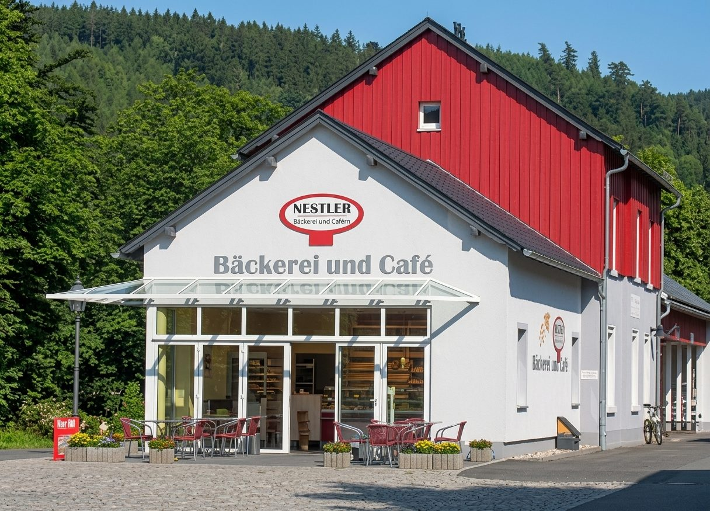
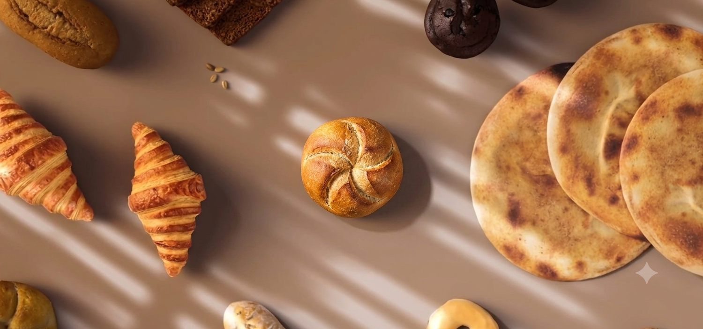
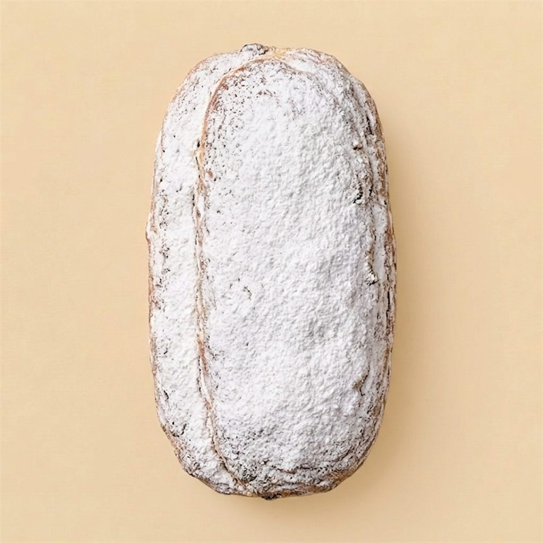
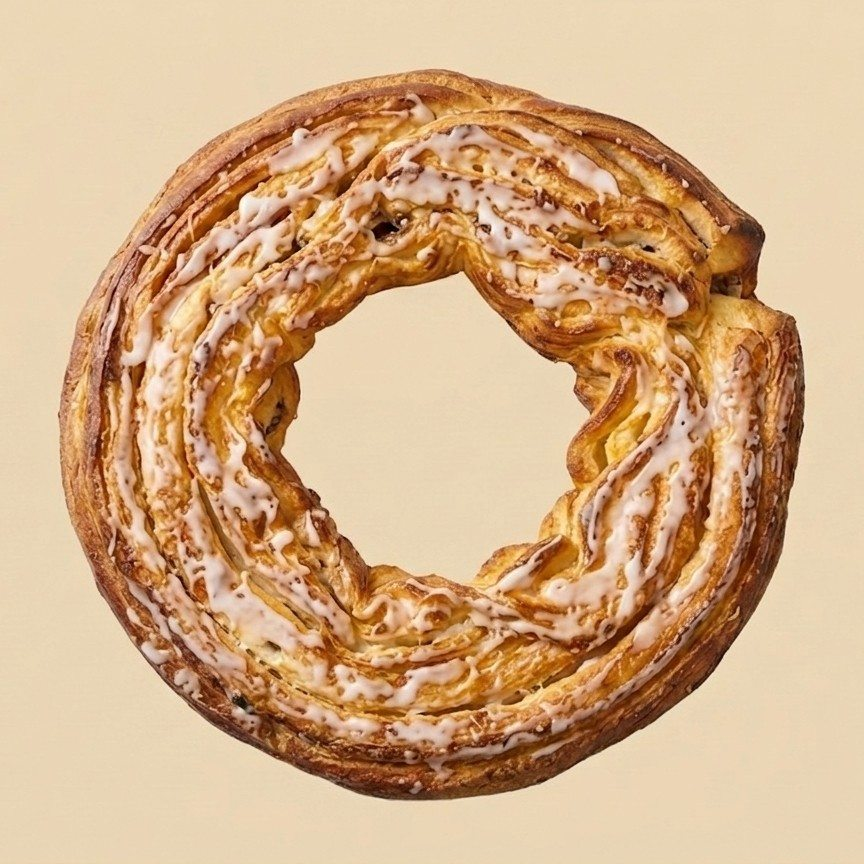
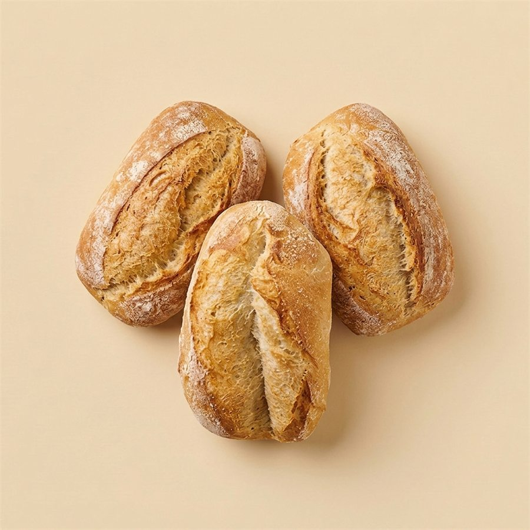
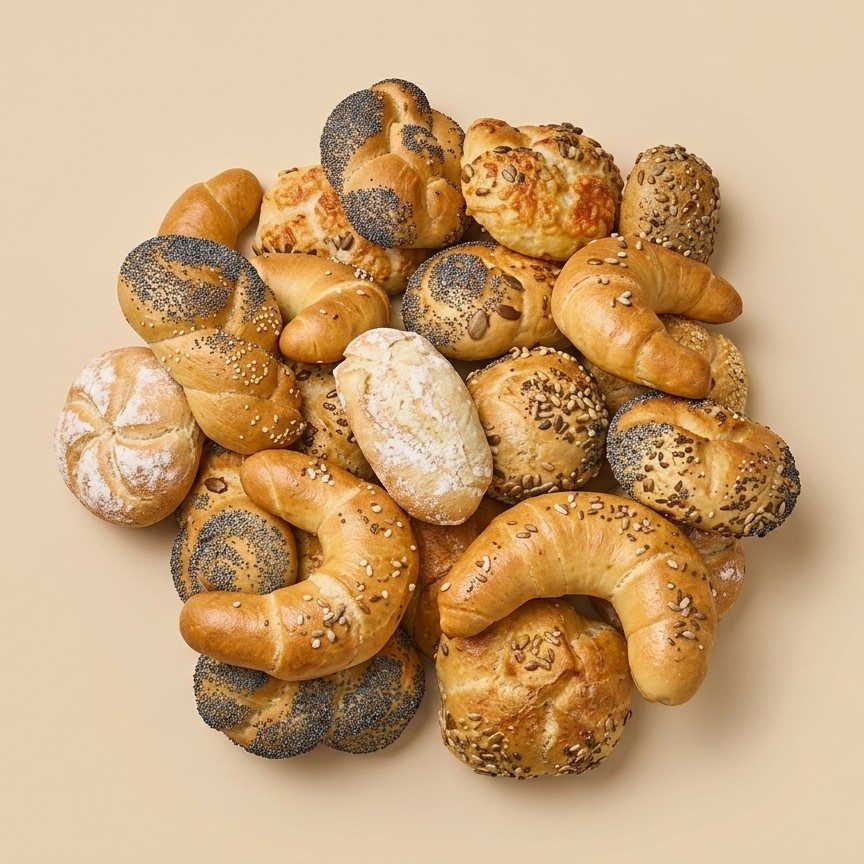
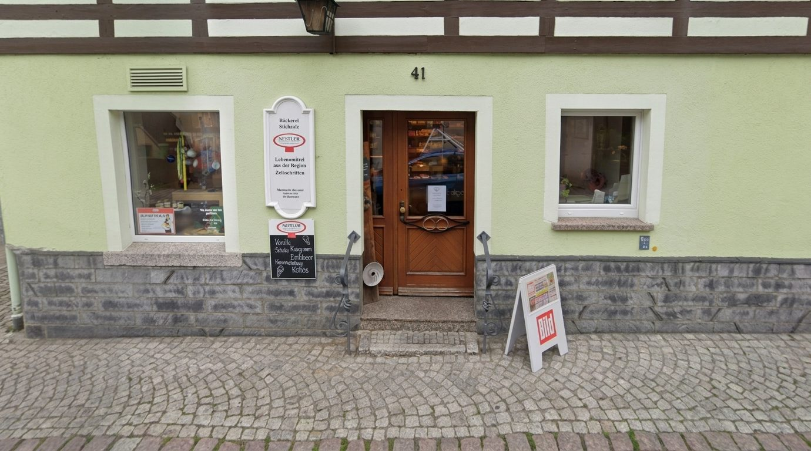

V rukou rodiny od roku 1973
Tradice v
každém zrnu
Specializovaná pekárna na nádraží v Geisingu. Každé ráno čerstvě upečeno – od krušnohorské vánočky až po housky Rungsen z Geisingu.
Naše speciality
Krušnohorská vánočka
-

Vánoční pečivo -

Rodinný recept -

Specialita podniku -

Pro velké oslavy
Těžká, šťavnatá, hustě pocukrovaná
Máslová vánočka podle krušnohorské tradice, s rozinkami, mandlemi a kandovanou citronovou kůrou. Zraje celé týdny, než je zabalena do másla a moučkového cukru – vánoční dobrota k uschování.
01 / 04
Otevírací doba
Dnes u Nestlerů
Čerstvě z Geisingu

Na přání
Pro každou příležitost
Pro každou příležitost
něco výjimečného
Ať už jde o svatbu, kulaté narozeniny nebo firemní oslavu – dorty a pečivo připravíme přesně podle vašich představ. Poraďte se s námi o tvaru, náplni i příležitosti, rádi vám pomůžeme.